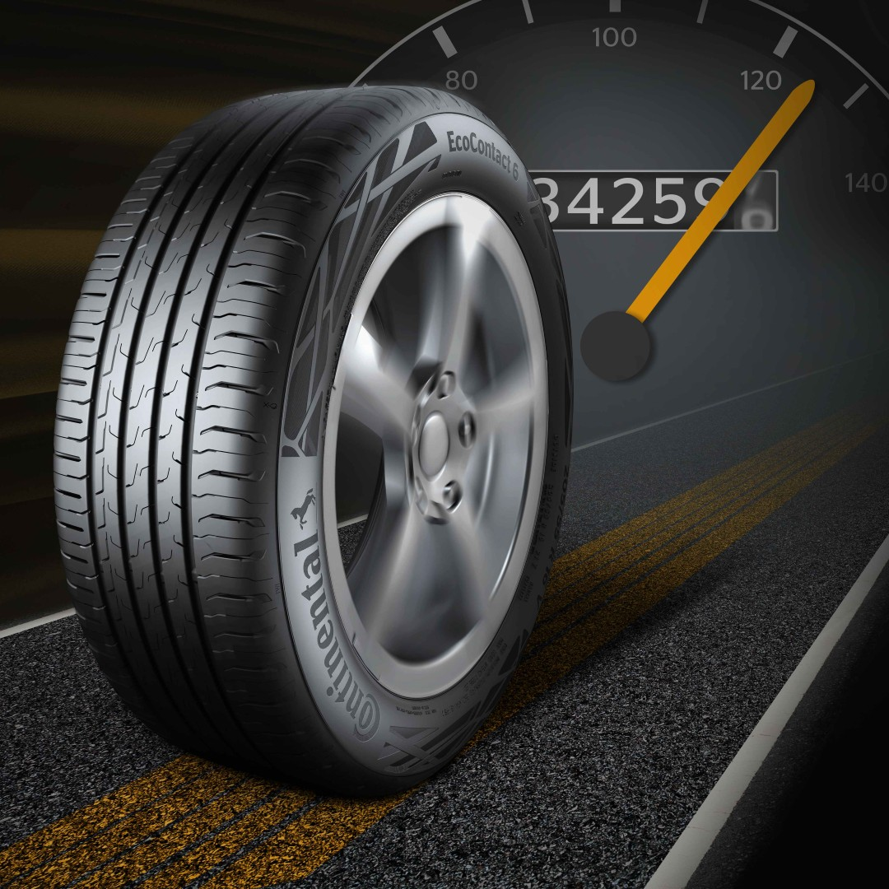

Continental Eco6 Q MO 245/45R19

RM 820.00
The Continental EcoContact 6Q (245/45R19 102Y XL * MO) is a German-engineered Original Equipment (OE) premium touring tyre tailored for luxury sedans and electric vehicles, prioritizing ultra-quiet cabin comfort, extended tread mileage, and maximum energy efficiency. Overview & Engineering Designed for drivers who want a refined, whisper-quiet ride without sacrificing high-speed stability, the EcoContact 6Q is factory-approved by leading European automakers: • Noise-Optimized "Q" Tread Design. Modified tread blocks, sipes, and lateral grooves prevent air pumping and harmonic resonance, delivering a noticeably quieter and smoother ride on rough highway tarmac. • Green Chili 2.0 Compound. A high-tech polymer and silica formulation adapts seamlessly to road surface micro-textures, reducing energy loss and rolling resistance to lower fuel consumption or extend EV battery range. • Tailored Pattern Geometry. Balanced rib stiffness and chamfered edges enhance steering precision and cornering stability while ensuring even pressure distribution for longer tread life. • Dual OE Homologation ( MO).* Engineered to meet strict factory standards for both Mercedes-Benz (MO) and BMW (*) vehicles, ensuring optimal suspension tuning and driving dynamics. Technical Breakdown (245/45R19 102Y XL * MO) • 245: Section width of 245 mm from sidewall to sidewall. • 45: Aspect ratio (sidewall height is 45% of the width). • R19: Radial construction built for a 19-inch rim. • 102Y XL: Load index of 102 (up to 850 kg per tyre) with Extra Load (XL) reinforcement, paired with a Y speed rating (up to 300 km/h). • * MO: Official factory approval markings for BMW (*) and Mercedes-Benz (MO). • UTQG Ratings: Treadwear 320, Traction A, Temperature A. Would you like a short e-commerce listing copy (for Shopee, Lazada, or Mudah) for both the EcoContact 6Q and MC7, or do you need descriptions for additional tyre sizes? Let me know your platform or format so I can tailor the text directly.
Klang Hock Li Tyre Services Sdn Bhd, Klang, Selangor, Malaysia.
View live product details and enquire